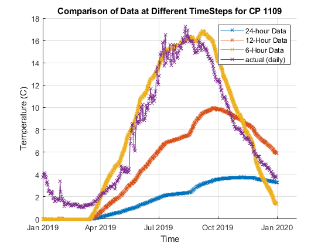
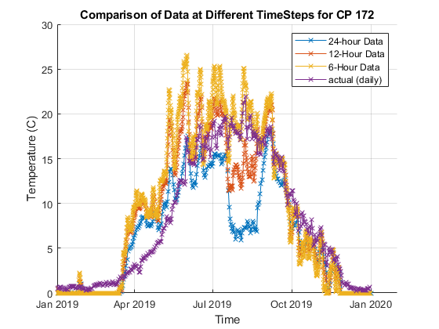
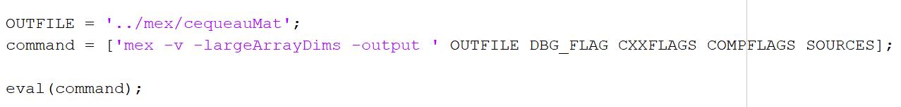
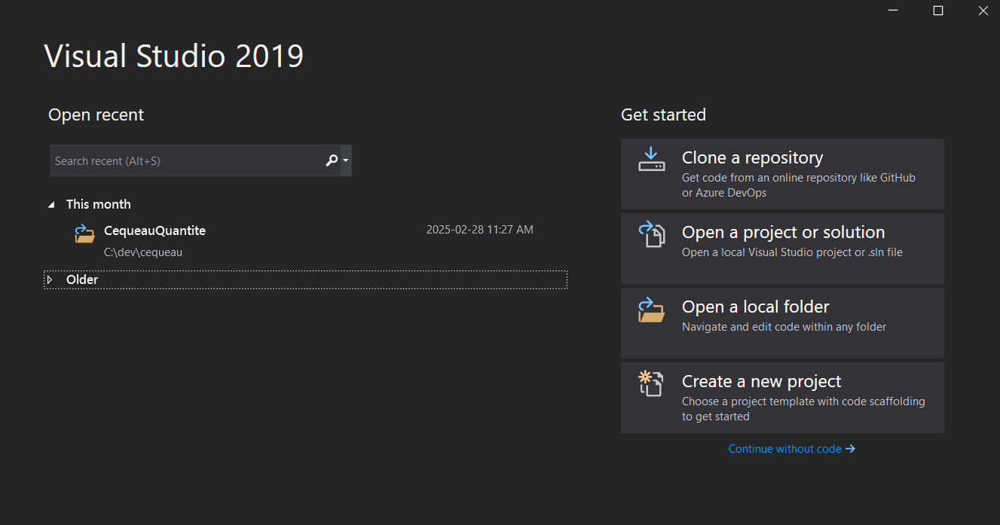
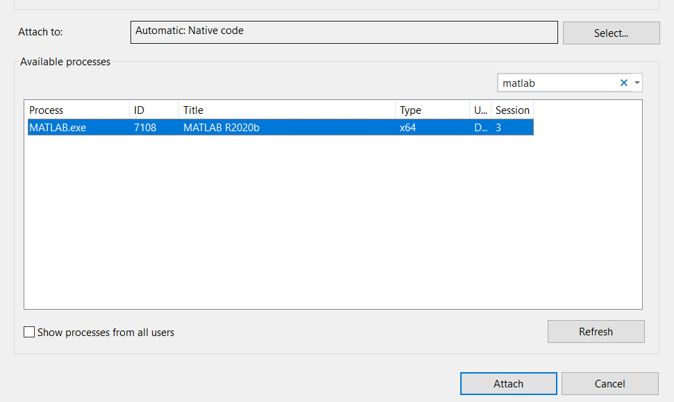
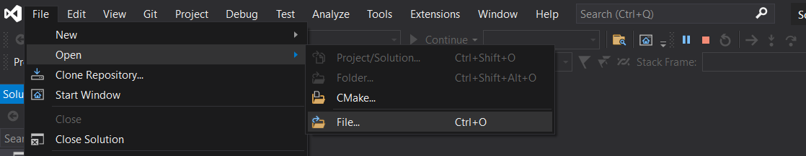

Purpose¶
This guide provides instructions for setting up the development environment for Cequeau.
Folder Structure¶
The src/ folder contains all header and source files for the C++ mex
function, and also the matlab and octave compilation files.
The tests/ folder contains various folders to test functions and
features.
The docs/ folder contains documentation for the development and usage of
Cequeau
The mex/ the compiled mex binaries will be placed within this folder
Software Requirements¶
The following section outlines the software and tools necessary to develop and compile Cequeau. Cequeau can be compiled using both Matlab and Octave.
C++ Compiler¶
A C++ compiler that supports at least C++14.
Matlab¶
 Matlab supports both GCC (MinGW) and MSVC,
with different supported compiler versions for each release. The
supported compilers can be found
here,
within the compilers section.
Matlab supports both GCC (MinGW) and MSVC,
with different supported compiler versions for each release. The
supported compilers can be found
here,
within the compilers section.
MSVC (Microsoft Visual C++)¶
MSVC is installed by installing Visual Studio with the "Desktop development with C++" option enabled. The required Microsoft Visual Studio version will depend on the Matlab version and its supported compilers. For example, when using Matlab R2020b, which supports up to Microsoft Visual C++ 2019, it requires Visual Studio 2019.
GCC (MinGW)¶
MinGW-w64 is a GCC toolchain for the Windows platform. It can be installed by following Mathwork\'s guide.
Octave¶
Cequeau v5.0.0 was developed using Octave 9.4, and MinGW 13. A newer version of octave and compiler will also satisfy the requirements and compile the code.
The latest version of MinGW-w64 can be installed through MSYS2.
Compilation¶
Compilation in Matlab¶
The Matlab script to compile the C++ mex function is
cequeau/src/compileCequeauMat.m.
All relevant .cpp source files are appended to the SOURCES argument, if
a new file is to be added, it should be appended in a similar manner.
To ensure consistency, the C++ version is specified within the compile
arguments. As shown below, the script automatically detects the compiler
and sets the flags accordingly. COMPFLAGS is used for MSVC and CXXFLAGS
is used for GNU. More information about mex and the compiler flags can
be found here (https://www.mathworks.com/help/matlab/ref/mex.html).
To enable logging to the .log file, set the log variable to true.

To enable debugging, the -g flag must be set, to do so, simply set the
debug variable to true.

The output file is specified in the OUTFILE variable, by default the
compiled mex will be placed in cequeau/mex/.

Compilation in Octave¶
The compilation for octave is similar to the compilation in Matlab, with
only some syntactical differences. As shown below
(cequeau/src/compileCequeauOct.m).

The FLAGS variable contains the custom flag -DENV_OCTAVE, which is
used within the cequeau program to detect whether it is the octave
version being run. This allows the ability to customize certain elements
depending on the environment. For example, it is used to append Oct or
Mat at the end of the log file to help the user identify the appropriate
log file.
Compilation of Cequeau Interpolation¶
The interpolation compilation scripts (compileInterpolationMat.m and
compileInterpolationOct.m) are both similar to their respective Cequeau
Quantite compilation scripts, except they are targeting the source files
relevant for InterpolationMex.cpp.
Usage¶
Compiling the C++ code using Matlab or Octave mex creates a mex file
(.mexw64 or .mex). This file is used as a Matlab/Octave function. It
takes in various inputs and the order matters, therefore if an input is
optional, it is still required to provide an empty array [] within the
input list. For detailed explanation about all of the inputs and
outputs, please refer to 'Intrants -- Extrants v5.docx' and for a more
in depth usage guide, follow 'Cequeau_Guide.docx'.
Here is an example usage:
[y.etatsCE, y.etatsCP, y.etatsFonte, y.etatsEvapo, y.etatsBarrage, ...
y.pasDeTemps, y.avantAssimilationsCE, y.avantAssimilationsFonte, ...
y.avantAssimilationsEvapo, y.etatsQualCP, y.avAssimQual] = ...
cequeauQuantiteMat(struct.execution, struct.parametres, ...
struct.bassinVersant, struct.meteo, ...
struct.etatsPrecedents, struct.assimilations, ...
struct.stations);
After running this function, all of the outputs will be placed in the variables provided in the left side of the function.
Logging to .log file¶
A custom logger (log.h) was written to log data to a .log file during
testing. This feature is useful for quick testing and ensuring expected
functionality. It has various logging levels that can be used to print
out the desired type of information.
enum TLogLevel {logERROR, logWARNING, logINFO, logDEBUG, logDEBUG1,
logDEBUG2, logDEBUG3, logDEBUG4};
The logLevel is specified within the cequeauQuantiteMex.cpp file:
Debugging¶
The most convenient way to debug a mex program is using Visual Studio, by attaching the process to the running matlab instance.
-
Compile the Mex function with debug enabled
Within the appropriate script to compile, set
debugtotrue. After compilation, there should be a.pdbfile alongside the.mexfile. -
 Open visual studio and continue without code
-
 Click the
Click the Attach to Process...button in the top toolbar (The exact icon/location might vary slightly) -
Find and attach to the Matlab process (e.g.,
MATLAB.exe). You can use the filtering textbox for quick retrieval.
-
 Open the source file
cequeauQuantiteMex.cpp. Go toFile -> Open -> File, and locate the file that was compiled in the Matlab workspace. -
Set a breakpoint at the entry point,
mexFunction(). Right click on the line,Breakpoint -> Insert Breakpoint. -
Now go back to matlab, and run the function.
-
Visual Studio should display the function blocked at the breakpoint.
-
 Disable
Disable Access Violationexceptions if they interrupt debugging unnecessarily. (Go toDebug -> Windows -> Exception Settingsand uncheckCommon Language Runtime Exceptions -> System.AccessViolationExceptionor similar, depending on VS version). -
The program can now be debugged like any other C++ program, using
Step Into(F11),Step Over(F10),Continue(F5), etc.
Testing Matlab and Octave¶
Cequeau v5.0.0 added support for Octave. To validate the octave compiled version, test run files were created to ensure the Octave version produced the same output as the Matlab version. The Matlab and Octave versions are tested with the same inputs, and the outputs are compared to ensure there are no differences.
The comparison testing is within Cequeau/tests/testing_octave/
The testing_octave/scripts/ folder contains Matlab and Octave scripts to
run the program with various configurations. For example,
run_mat_fonte_0_Cequeau.m tests the program with the Cequeau melting
module in Matlab. The run_oct_fonte_0_Cequeau.m is the octave
equivalent. Each of these files saves an output variable that is saved
as .mat files within the testing_octave/outputs/ folder. The following
image demonstrates an example. The outputs are saved as v7 mat files
since that is the highest version supported by Octave.

 Within the
Within the testing_octave/ folder, the